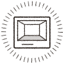
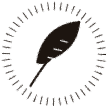

Mimic
The board of places and the lantern: the whole game in one look.
Proposal the lantern
the lanternVViktor
IIlka
MMara
TTomi
BBram
ZZsófi
A Lighthouse A Ballroom
A Ballroom The Crypt
The Crypt
An Asylum The Theatre
The Theatre A Night Train
A Night Train
The Library A Chapel
A Chapel The Docks
The DocksA Circus
The Mill
 An Inn
An InnThe Gallows
A Garden
 The Market
The MarketA Ship
1The places are the heroSixteen vellum place cards (136 × 128, 19 px names) centred in the stage, right of the companion table (the shared two-object layout, as in the Mirror). Today they are 60 px tiles with labels nobody can read from the sofa.
2The lantern passesThe companion table (400 px, left, as in every two-object game) shows the asker (gilt) and the asked (vellum) joined by a dotted gilt arc; the lantern sits in the disc. The line under it says it in words.
3Long clock, calm screenMimic’s 8-minute clock lives in the header; the band only changes on each question.
4AccusationsThe ledger shows who still holds their one accusation. An accusation runs the tally scene with Agree / Disagree columns; it must be unanimous, and the line shows it.
5The unmaskThe Mimic’s guess: the chosen place card lifts from the board, held breath, then the true place card turns beside it, gilt or red.
6No strike-outs on TVStrike-outs are private notes on phones; the TV board never shows them.